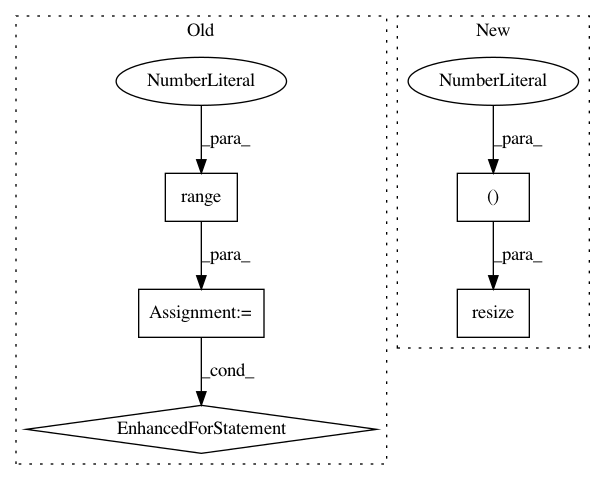

f22c4ebf74fd00bb8e2ec136ea9cf0f7177ebf61,TestImageAugmenter.py,TestImageAugmenter,test_two_channels,#TestImageAugmenter#,186
Before Change
images = np.array([image_before]).astype(np.uint8)
nb_similar = 0
for _ in range(100):
image_after = ia.augment_batch(images)[0]
//print(image_after)
if np.allclose(image_target, image_after):
nb_similar += 1
//print("similar:",nb_similar)
self.assertTrue(nb_similar > (33-10) and nb_similar < (33+10))
// two channels, channel is last axis of each image
After Change
images = np.array([image_before]).astype(np.uint8)
nb_augment = 1000
images_augmented = ia.augment_batch(np.resize(images, (nb_augment, 2, 2, 2)))
nb_similar = 0
for image_after in images_augmented:
In pattern: SUPERPATTERN
Frequency: 3
Non-data size: 5
Instances
Project Name: aleju/imgaug
Commit Name: f22c4ebf74fd00bb8e2ec136ea9cf0f7177ebf61
Time: 2015-07-16
Author: kontakt@ajung.name
File Name: TestImageAugmenter.py
Class Name: TestImageAugmenter
Method Name: test_two_channels
Project Name: utkuozbulak/pytorch-cnn-visualizations
Commit Name: 3df2eaf74d8f2299ca05e3e98cab5bf89dafc249
Time: 2017-10-24
Author: utku.ozbulak@gmail.com
File Name: cnn_visualisation.py
Class Name:
Method Name: preprocess_image
Project Name: ilastik/ilastik
Commit Name: 8a7c79adfd36ce229b846669412c52e69ec2e674
Time: 2013-02-12
Author: kemal.eren@iwr.uni-heidelberg.de
File Name: lazyflow/operators/classifierOperators.py
Class Name: OpSegmentation
Method Name: execute